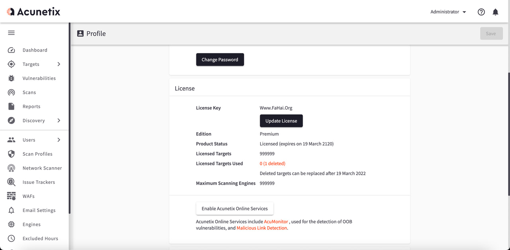

# [AWVS14 Docker](https://blog.zygd.site/go.html?u=https://blog.zygd.site/AWVS14 Docker.html)
注：如认为本破解补丁存在某些后门或转载删版权者，请勿使用！
由于传播、利用此文所提供的信息而造成的任何直接或者间接的后果及损失，均由使用者本人负责，文章作者不为此承担任何责任。
XRSec 拥有对此文章的修改和解释权如欲转载或传播此文章，必须保证此文章的完整性，包括版权声明等全部内容。未经作者允许，不得任意修改或者增减此文章内容，不得以任何方式将其用于商业目的
# INFO
Version 14 build 14.3.210628104 for Windows, Linux and macOS – 28th June 2021
# Updates
- Target Knowledgebase will be reset when Target Settings are changed
- Updated SSL/TLS Certificate expiry threshold notification from 30 days to 60 days
# Fixes
- Fixed: OWASP compliance report template to not be available in some Editions
- Fixed: Some scripts where not observing Excluded paths configured in Target settings
ip:3443
awvs@awvs.com
Awvs@awvs.com
# Preview

# Install
docker run -it -d \ | |
--name awvs \ | |
-p 3443:3443 \ | |
xrsec/awvs:v14 | |
# registry.cn-hangzhou.aliyuncs.com/xrsec/awvs:v14 |
# BuildFile
# Dockerfile
FROM ubuntu:18.04 | |
LABEL maintainer="xrsec" | |
LABEL mail="troy@zygd.site" | |
RUN mkdir /awvs | |
COPY awvs.sh /awvs | |
COPY Dockerfile /awvs | |
COPY xaa /awvs | |
COPY xab /awvs | |
COPY xac /awvs | |
COPY xad /awvs | |
COPY xae /awvs | |
COPY xaf /awvs | |
COPY awvs_listen.zip /awvs | |
# init | |
# RUN cp /etc/apt/sources.list /etc/apt/sources.list.bak \ | |
# && sed -i "s/archive.ubuntu/mirrors.aliyun/g" /etc/apt/sources.list \ | |
# && sed -i "s/security.ubuntu/mirrors.aliyun/g" /etc/apt/sources.list \ | |
# && apt update -y \ | |
RUN apt update -y \ | |
&& apt upgrade -y \ | |
&& apt-get install wget libxdamage1 libgtk-3-0 libasound2 libnss3 libxss1 libx11-xcb-dev sudo libgbm-dev curl ncurses-bin unzip -y | |
# && apt-get install wget libxdamage1 libgtk-3-0 libasound2 libnss3 libxss1 libx11-xcb-dev sudo libgbm-dev curl ncurses-bin unzip -y \ | |
# && mv /etc/apt/sources.list.bak /etc/apt/sources.list | |
# init_install | |
RUN cat /awvs/xaa /awvs/xab /awvs/xac /awvs/xad /awvs/xae /awvs/xaf > /awvs/awvs_x86.sh \ | |
&& chmod 777 /awvs/awvs_x86.sh \ | |
&& sed -i "s/read -r dummy/#read -r dummy/g" /awvs/awvs_x86.sh \ | |
&& sed -i "s/pager=\"more\"/pager=\"cat\"/g" /awvs/awvs_x86.sh \ | |
&& sed -i "s/read -r ans/ans=yes/g" /awvs/awvs_x86.sh \ | |
&& sed -i "s/read -p \" Hostname \[\$host_name\]:\" hn/hn=awvs/g" /awvs/awvs_x86.sh \ | |
&& sed -i "s/host_name=\$(hostname)/host_name=awvs/g" /awvs/awvs_x86.sh \ | |
&& sed -i "s/read -p \" Hostname \[\$host_name\]:\" hn/awvs/g" /awvs/awvs_x86.sh \ | |
&& sed -i "s/read -p ' Email: ' master_user/master_user=awvs@awvs.com/g" /awvs/awvs_x86.sh \ | |
&& sed -i "s/read -sp ' Password: ' master_password/master_password=Awvs@awvs.com/g" /awvs/awvs_x86.sh \ | |
&& sed -i "s/read -sp ' Password again: ' master_password2/master_password2=Awvs@awvs.com/g" /awvs/awvs_x86.sh \ | |
&& sed -i "s/systemctl/\# systemctl/g" /awvs/awvs_x86.sh \ | |
&& /bin/bash /awvs/awvs_x86.sh | |
# init_listen | |
RUN chmod 777 /awvs/awvs.sh \ | |
&& unzip -d /awvs/awvs_listen /awvs/awvs_listen.zip \ | |
&& chmod 444 /awvs/awvs_listen/license_info.json \ | |
&& cp /awvs/awvs_listen/wvsc /home/acunetix/.acunetix/v_210628104/scanner/ \ | |
&& cp /awvs/awvs_listen/license_info.json /home/acunetix/.acunetix/data/license/ \ | |
&& cp /awvs/awvs_listen/wa_data.dat /home/acunetix/.acunetix/data/license/ \ | |
&& chown acunetix:acunetix /home/acunetix/.acunetix/data/license/wa_data.dat | |
ENTRYPOINT [ "/awvs/awvs.sh"] | |
EXPOSE 3443 | |
# ENV TZ='Asia/Shanghai' | |
# ENV LANG 'zh_CN.UTF-8' | |
STOPSIGNAL SIGQUIT | |
CMD ["/awvs/awvs.sh"] |
# awvs.sh
#!/bin/bash | |
clear | |
echo -e "\033[1;31m ______ _ _ _ \033[0m" | |
echo -e "\033[1;32m | ____| | | | | (_) \033[0m" | |
echo -e "\033[1;33m | |__ __ _ | |__| | __ _ _ \033[0m" | |
echo -e "\033[1;34m | __| / _\` | | __ | / _\` | | | \033[0m" | |
echo -e "\033[1;35m | | | (_| | | | | | | (_| | | | \033[0m" | |
echo -e "\033[1;36m |_| \__,_| |_| |_| \__,_| |_| \033[0m" | |
echo -e "\033[1;34m -------------- \033[0m" | |
echo -e "\033[1;31m __ __ ____ \033[0m" | |
echo -e "\033[1;32m \ \/ / | _ \ ___ ___ ___ \033[0m" | |
echo -e "\033[1;33m \ / | |_) | / __| / _ \ / __| \033[0m" | |
echo -e "\033[1;34m / \ | _ < \__ \ | __/ | (__ \033[0m" | |
echo -e "\033[1;35m /_/\_\ |_| \_\ |___/ \___| \___| \n\033[0m" | |
echo -e "\033[1;31m Thank's fahai && TimeLine Sec \n\033[0m" | |
echo -e "\033[1;32m [ help ] \033[0m" | |
echo -e "\033[1;35m [ https://www.fahai.org/index.php/archives/128/ ] \033[0m" | |
echo -e "\033[1;33m [ https://blog.zygd.site/AWVS14%20Docker.html ] \n\033[0m" | |
su -l acunetix -c /home/acunetix/.acunetix/start.sh |
# awvs_x86.sh
https://www.fahai.org/index.php/archives/128/
转载自 --（进入查看博主此文的更新版本） [https://blog.zygd.site/AWVS14 Docker.html](https://blog.zygd.site/go.html?u=https://blog.zygd.site/AWVS14 Docker.html)
版权声明: 本博客所有文章除特别声明外，均采用 CC BY-NC-SA 4.0 许可协议。转载请注明来自 XR-SEC！